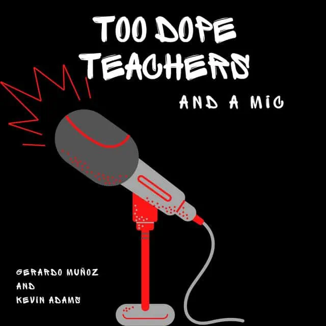

Too Dope Teachers and a Mic

Too Dope Teachers and a Mic is an engaging and insightful show that offers a unique perspective on education. The podcast is hosted by two experienced teachers, Christina and Kia, who share their experiences, knowledge, and expertise on a wide range of topics related to education.
The hosts are relatable and funny, making the podcast enjoyable to listen to. The podcast covers a range of issues related to education, including classroom management, equity, and social justice. The hosts provide practical advice and strategies that educators can implement in their own classrooms.